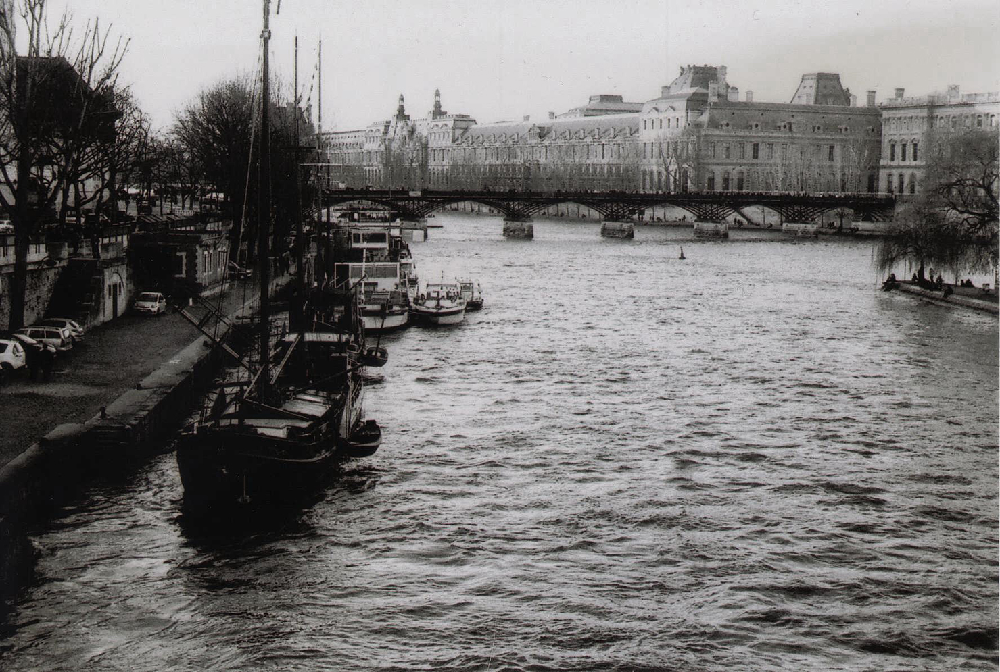

These images were all made with black and white film. It is a work on light and shadow but it was also the discovery for me of this medium. Accustomed to colour, I had to relearn how to manage the luminous flows and the contours of the matter in order to give back warmth where there is no heat source.
The depth of a black and white image is different than a color image. Emotions are more permeable and are communicated more strongly to the viewer.